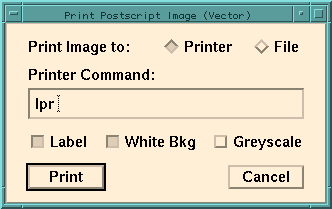

The File menu contains items which are in general associated with input/output and event control. The File menu items are explained below.
Displays the dialog for connecting to the SNO dispatcher, allowing real-time viewing of online events. In the dispatcher dialog, enter the name of the SNO dispatcher, then click Connect. If the connection is successful, live events will continuously displayed and the Event Control window will be opened.Open File...
Displays the file open dialog box for opening event files. Currently, the standard version of XSNOED only reads ZDAB format files. The ROOT_FILE version of XSNOED has the added capability of being able to read ROOT event files.Open Rch File... (ROOT_FILE version only)
Displays the file open dialog box for opening Rch files. Rch files contain a set of singles histograms which are displayed in the Rch windows. The Close menu item will close this file as well as the input event file.Close
Closes the current file or dispatcher connection, and the Rch file if open.Print Image...
Prints a high-quality vector image to a postscript printer or file. After selecting this menu item, a dialog box will appear allowing the print settings to be configured. To send the output to a printer, select Printer in the dialog, and enter the print command. On most systems, the command "lpr" will print to the default printer, or "lpr -P<printer name>" will print to a specific printer. To write the image to file, select File and enter a filename. If the specified file already exists, it will be overwritten. Use an extension of .ps for a standard postscript file, or .eps for an encapsulated postscript file to include in another document.Print Window... (not available in VAX version)The Label checkbox turns on image labels for printing. See the Settings window section for more information about image labels. The White Bkg checkbox sets a white background for printed images, and Greyscale prints the image in greyscale.
After specifying the print settings, press the Print button. You are then prompted to select an image for printing. Click with the mouse on any image window to select it for printing.
Print Image can only be used to print the graphics of an image window, unlike Print Window which can be used to print any window or area of the screen.
Note: When writing to printer or .ps file, the image is enlarged to fill a standard letter-sized page. When writing to a .eps file, the image size is left unchanged. Wide images can be printed larger in landscape mode by specifying "-landscape" along with the print command or filename (i.e. "lpr -landscape" will print in landscape mode to the default printer). This landscape feature is not supported by Print Window.
There are many settings that can be adjusted to change the appearance of the output image. Here are a few relevant settings that are easily overlooked:
- The printed line width and font sizes can be scaled relative to the image size by changing the size of the window before printing. (The bigger the window, the smaller the relative line width and font size.)
- The font sizes can be changed independently through settings in the XSnoed resource file. (Although the printed font type is Helvetica, which can't be changed.)
- The rotation angle display can be changed or removed through the Settings window.
- The size of the hits can be changed through the Settings window.
- All colors (and the grayscale values they map into) can be changed through settings in the Colors window.
Prints any window or portion of the screen in raster format to a postscript printer or various types of image files. After selecting this menu item, a dialog box will appear allowing the print settings to be configured. To send the output to a printer, select Printer in the dialog, and enter the print command. On most systems, the command "lpr" will print to the default printer, or "lpr -P<printer name>" will print to a specific printer. To write the image to file, select File and enter a filename. If the specified file already exists, it will be overwritten. Commonly used extensions are .gif (GIF image), .jpg (JPEG image), .ps (postscript) and .eps (encapsulated postscript -- for inclusion in another document), although many other image formats are supported. See the "convert" man page for a full list of supported formats.Event Control...The Label checkbox turns on image labels for printing. See the Settings window section for more information about image labels. The White Bkg checkbox sets a white background for printed images, and Greyscale prints the image in greyscale.
After specifying the print settings, press the Print button. The cursor then changes to a cross, and the desired window is selected by clicking with the mouse. Optionally, you can click and drag the mouse to print an area of the screen.
Opens the Event Control window, allowing you to step forward and backward through the event file or specify cuts for events to be displayed. See the section on the Event Control window for more information.Next Event
Steps to the next event in the file, or displays the next event from the dispatcher. This is the same as History: Fwd in the Event Control window. Note that the exact behaviour of this command depends on setting of the Event Control Uncut checkbox.Prev Event
Displays the previous event from the file or dispatcher. This is the same as History: Back in the Event Control window. Note that the exact behaviour of this command depends on the setting of the Uncut checkbox in the Event Control window.Clear Event
Clears the event from the display. This also resets the sum if event summing is turned on.Sum Events
Toggles an option which causes events that would be displayed to be summed together. When in Sum mode, the Tac, Qhs, Qhl and Qlx values displayed are the average over all summed events. The Hit Cnt value gives the number of times a tube was hit across all events. In the Event Info window, the Evt Num gives the number of events summed. In this mode, clicking on Continuous in the Event Control window will cause all cut events in the remainder of the file to be summed, with intermediate results being displayed at the update rate specified in the Event Control window.Fit Events (FITTR version only)When using the calibrated version of XSNOED, raw ADC values are summed for each channel and the calibrations for cell zero are applied to the summed data for display. Note that this may cause inaccuracies in the displayed sum data if the cell-to-cell variations are significant within a channel.
Sum mode also sums NCD data for events. The NCD shaper value then becomes an average of all summed events, and the NCD hit counters give the number of times the Shaper, MUX and Scope fired for each NCD tube. In sum mode, the NCD scope window displays the most recent scope trace for each channel.
Causes new events to be automatically fitted with the online fitter before being displayed. Note: Will only run the fitter automatically for NHIT<800 events. For higher NHIT events, fit the event manually from the Fitter window. See the section on the Fitter window for more information about the fit.Settings/General...
Opens the Settings window, allowing you to change general XSNOED settings.Settings/Colors...
Opens the Colors window, allowing customization of the XSNOED image colors.Save Settings
Saves the current XSNOED settings, window locations, and image colors to the XSnoed resource file in the user's home directory. The next time XSNOED is run, these settings are automatically loaded. There is an option in the Settings window to cause these settings to be saved automatically when XSNOED is quit.About XSNOED...
Opens the XSNOED About box, which directs the user to this file for help about XSNOED features.User Guide... (not available in VAX version)
Runs Netscape to display this user guide.Extras/New Event Display
Opens an auxiliary "SNO Event Display" window. This is effectively like running two copies of XSNOED with the restriction that only one version may be connected to the dispatcher. Auxiliary displays may be closed without causing XSNOED to quit.Extras/Load Uniform Distribution
Loads a synthesized event with uniform ADC values for every PMT. The values used are Tac=1500, Qhs=Qhl=Qlx=750, with one hit per tube. This option is useful for checking the calibration constants used for calibrated displays.Extras/Dump Record Info
When reading events from the dispatcher or a ZDAB file, this option causes information about records other than PMT event records to be printed to the console output. Note that because of the way XSNOED reads ahead of the currently displayed event, the output may show records which come after the event being viewed. However, the output gives the GTID of the event immediately preceeding the record, allowing the position of the record in the file to be determined.Extras/Echo Main Display (auxiliary displays only)
Causes all events shown in main display to be echoed to this auxiliary XSNOED display. Auxiliary displays are opened through the File/Extras/New Event Display menu item.Protect (DEMO_VERSION only)
Disables certain XSNOED menu items and features, and prevents windows from closing. When protected, this menu item changes to Unprotect, allowing the user to enter a password to re-enable the disabled XSNOED features.Close Display (auxiliary displays only)
Closes this auxiliary display. Auxiliary displays are opened through the File/Extras/New Event Display menu item.Quit
Quits XSNOED. Settings will be saved automatically when you quit if the Save Settings on Quit checkbox of the Settings window is selected.